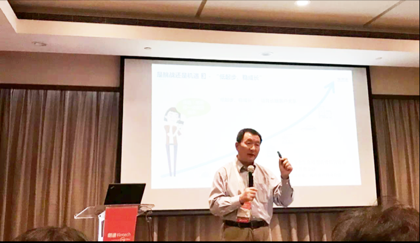

信而富出席2017朗迪（LendIt）金融科技峰会
共议金融科技未来
2017-07-16
7月15日，2017朗迪（LendIt）金融科技峰会在上海举行。信而富创始人兼首席执行官王征宇博士受邀出席，与来自全世界的顶级金融科技公司及投资者围绕金融科技、普惠金融等话题进行深入探讨。

据了解，作为全球规模最大的金融科技峰会，本届朗迪峰会吸引了包括蚂蚁金服、微众银行、信而富等金融科技公司，超过2000名全球金融科技行业决策者参与。
上海市互联网金融协会秘书长王喆发表了欢迎致辞，王喆在致辞中表示：“金融科技不是互联网金融的简单升级版，也不是‘马甲’版，而是一种比互联网金融更加广泛，更加能够准确体现行业发展现状的概念。”
在下午的“中国互金资产生态论坛”上，王征宇博士与中国人民银行研究局副局长纪敏、中国金融改革研究院院长刘胜军等嘉宾分别围绕消费信贷、数字普惠金融、征信体系创新等话题做了精彩发言。

王征宇在演讲中表示“资产荒”是一个伪命题，“它的实质是供需之间的匹配，即有没有足够的人借钱，有没有足够多的机构覆盖他们的需求。”
王征宇说，“信贷是互联网金融行业难以形成垄断的领域，因为‘来者并非都是客’。互联网信贷企业只要能够找准自己的定位，资产荒就可以迎刃而解。这一行业并非都是赢者通吃的市场，每家企业都可以找到自己的发展之路。”
作为中国最大的网络借贷信息中介平台之一，信而富运用先进的大数据风控技术，结合在中国17年的风险管理实践经验，致力于为借款人提供便捷且价格合理的信用额度及为出借人提供具备吸引力且基于风险而调整的收益，在金融科技领域独树一帜。